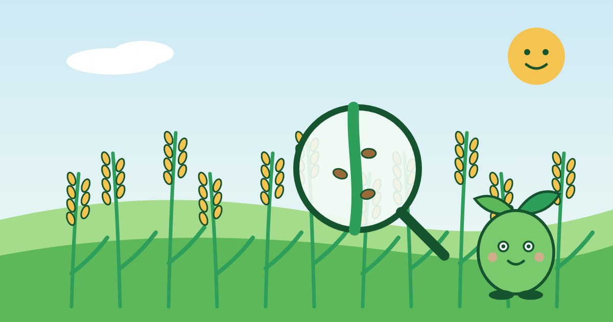

Inovasi Fitur Offline-First dan Pengenalan Suara Multilingual AgriVoice AI
AgriVoice AI merilis pembaruan arsitektur model suara on-device yang mendukung bahasa Jawa dan Sunda tanpa ketergantungan sinyal internet.

Konektivitas internet yang belum merata di area pedesaan dan pelosok persawahan kerap menjadi tantangan utama implementasi teknologi digital di sektor agrikultur. Menjawab tantangan tersebut, tim pengembang AgriVoice AI secara resmi merilis pembaruan arsitektur Offline-First teranyar.
Fitur ini memungkinkan model speech-to-text ringan berjalan langsung di perangkat ponsel (on-device AI) tanpa perlu mengirimkan rekaman audio ke server cloud. Petugas penyuluh dapat merekam dialog, mengambil foto koordinat GPS, dan menyusun draf berita acara meski berada di area blank spot sinyal seluler.
Ketika perangkat kembali mendeteksi koneksi internet atau Wi-Fi, seluruh berkas kunjungan yang tersimpan lokal dienkripsi dan disinkronkan secara otomatis ke basis data pusat.
Selain itu, pembaruan ini juga menyempurnakan pemahaman kosakata dialek lokal (bahasa Jawa krama/ngoko dan bahasa Sunda) serta kamus taksonomi hama tanaman pangan Indonesia.
Pembaruan ini diharapkan mempercepat digitalisasi pertanian Indonesia hingga ke pelosok desa tanpa terkendala infrastruktur jaringan.